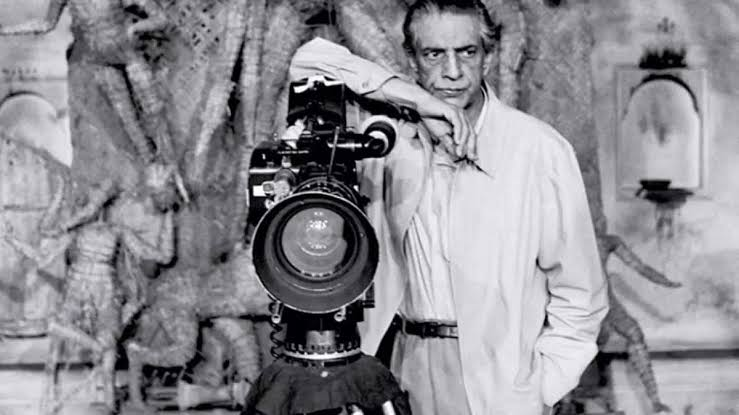

After being "deeply moved" by Pather Panchali, the 1928 classic Bildungsroman of Bengali literature, Ray decided to adapt it for his first film. Pather Panchali is a semi-autobiographical novel describing the maturation of Apu, a small boy in a Bengal village. Pather Panchali did not have a script; it was made from Ray's drawings and notes. Before principal photography began, he created a storyboard dealing with details and continuity. Years later, he donated those drawings and notes to Cinémathèque Française
Ray gathered an inexperienced crew, although both his cameraman Subrata Mitra and art director Bansi Chandragupta would go on to achieve great acclaim. The cast consisted of mostly amateur actors. After unsuccessful attempts to persuade many producers to finance the project, Ray started shooting in late 1952 with his personal savings and hoped to raise more money once he had some footage shot, but did not succeed on his terms.[49] As a result, Ray shot Pather Panchali over two and a half years, an unusually long period.[49] He refused funding from sources who wanted to change the script or exercise supervision over production. He also ignored advice from the Indian government to incorporate a happy ending, but he did receive funding that allowed him to complete the film.
In 1967, Ray wrote a script for a film to be called The Alien, based on his short story "Bankubabur Bandhu" ("Banku Babu's Friend"), which he wrote in 1962 for Sandesh magazine. It was planned to be a U.S. and India co-production with Columbia Pictures, with Marlon Brando and Peter Sellers cast in the leading roles. Ray found that his script had been copyrighted and the fee appropriated by Michael Wilson. Wilson had initially approached Ray through their mutual friend, Arthur C. Clarke, to represent him in Hollywood. Wilson copyrighted the script credited to Mike Wilson & Satyajit Ray, although he contributed only one word. Ray later said that he never received compensation for the script.[84] After Brando dropped out of the project, the producers tried to replace him with James Coburn, but Ray became disillusioned and returned to Calcutta.[84] Columbia attempted to revive the project, without success, in the 1970s and 1980s.
